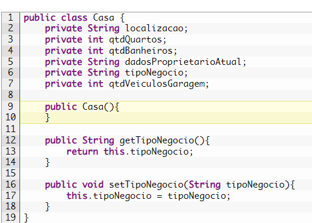
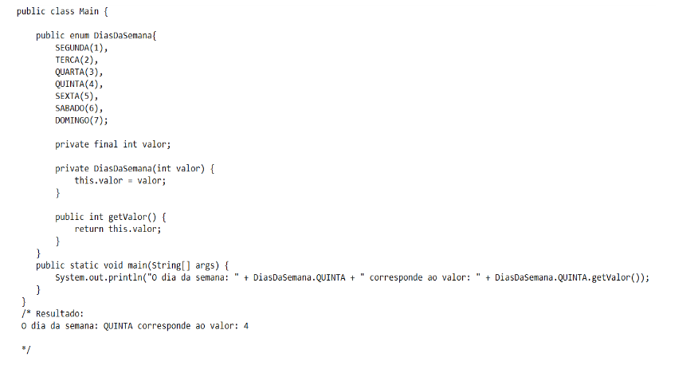

Definição de POO
POO é a Programação Orientada a Objetos e consiste num paradigma de linguagem de programação. Assim como em outras áreas, existem diferentes caminhos para se chegar ao mesmo resultado. Portanto, no universo do desenvolvimento de softwares isso também acontece. E um desses caminhos é o POO. A diferença, no entanto, é que o POO é o mais popular entre os developers. Isso porque ele suporta várias linguagens e vai além do desenvolvimento, sendo o ponto de partida de análises em geral. Nesse sentido, a POO suporta muitas linguagens de programação, entre elas: o C++; o C#; o Java; o Object Pascal; o VB.NET; o Objective-C; o Python; o Ruby.
Características
Um exemplo comum de aplicação da POO é o desenvolvimento de sistemas de gerenciamento de usuários e gestão de estoque, uma vez que a abordagem modular e reutilizável facilita a manutenção e expansão do sistema. Outra aplicação é a criação de jogos eletrônicos na modelagem de personagens, cenários, itens e interações entre eles.
As principais características da programação orientada a objeto são:
Abstração Essa característica é muito importante para definir o paradigma da programação orientada a objetos. A abstração consiste em transformar e extrair informações do mundo real para dentro do código. Encapsulamento um objeto na programação é um pequeno bloco contendo dados e informações. Isso só é possível devido ao encapsulamento.Dessa forma, garantimos que aquelas informações serão de responsabilidade exclusiva daquele próprio objeto, definindo um escopo para a sua atuação. Herança Esse conceito se assemelha muito ao que conhecemos como herança na vida real. Consiste em passar informações e características de uma classe para outra, sem a necessidade de repetição de código e entidades. Polimorfismo Polimorfismo significa “muitas formas”. Na programação orientada a objetos, essa característica define a especialização das classes filhas.
O que é Objeto?
Um objeto é um elemento computacional que representa, no domínio da solução, alguma entidade (abstrata ou concreta) do domínio de interesse do problema sob análise. um conjunto de operações associadas que podem ser aplicadas a ela, através dos operadores definidos na linguagem que podem ser aplicados a valores inteiros (soma, subtração, inversão de sinal, multiplicação, divisão inteira, resto da divisão inteira, incremento, decremento). Da mesma forma, quando se cria um objeto, esse objeto adquire um espaço em memória para armazenar seu estado (os valores de seu conjunto de atributos, definidos pela classe) e um conjunto de operações que podem ser aplicadas ao objeto (o conjunto de métodos definidos pela classe).
O que é instanciar um objeto?
Na programação orientada a objetos, uma instância é um objeto cujo comportamento e estado são definidos pela classe. As instâncias de uma classe compartilham o mesmo conjunto de atributos, embora difiram no conteúdo desses atributos. O uso da palavra Instance pode ter sido inspirado no inglês, esta palavra significa caso ou exemplo em inglês, instance. Na programação orientada a objetos, a palavra instanciar significa criar. Instância é a concretização de uma classe. Em um contexto de não programação, você pode pensar em dog como um tipo e em seu dog específico como uma instância dessa classe. Quando falamos em instanciar um objeto, criamos fisicamente uma representação concreta da classe.
O que é Classe?
Uma classe é uma forma de definir um tipo de dado em uma linguagem orientada a objeto. Ela é formada por dados e comportamentos. Para definir os dados são utilizados os atributos, e para definir o comportamento são utilizados métodos. Depois que uma classe é definida podem ser criados diferentes objetos que utilizam a classe. A Listagem 1 mostra a definição da classe Empresa, que tem os atributos nome, endereço, CNPJ, data de fundação, faturamento, e também o método imprimir, que apenas mostra os dados da empresa.
Classe anônima:
Classes anônimas te permitem criar um código mais conciso. Elas te permitem declarar e instanciar uma classe ao mesmo tempo. Elas são como classes locais exceto pelo fato de que elas não possuem nome. No exemplo anterior, a classe anônima está implementando a interface HelloWorld. • Parênteses que contém os argumentos para um construtor, exatamente igual a instância de uma classe normal. Nota: Quando você implementa uma interface, não tem construtor, então você só usa um par de parênteses igual ao exemplo.
Classes internas
Como o próprio nome diz, são classes que são definidas dentro de outra classe. Sendo que elas tem um relacionamento especial com sua classe externa (classe onde ela está definida), em relação as outras classes. Pelo fato de que elas podem acessar os membros privados da classe externa. É estranho, mais é verdade. Por que na verdade o que acontece, implicitamente a classe interna tem uma instância da classe externa. Classes abstratas: É um tipo de classe especial que não pode ser instanciada, apenas herdada. Sendo assim, uma classe abstrata não pode ter um objeto criado a partir de sua instanciação. Essas classes são muito importantes quando não queremos criar um objeto a partir de uma classe “geral”, apenas de suas “subclasses”. as classes abstratas permitem que criemos métodos abstratos (mas nem todos). Basicamente, um método abstrato é um método especial que não possui implementação, apenas assinatura (tipo de retorno, nome e parâmetros), e obriga as classes que “herdarem” da classe abstrata à implementar estes métodos, algo muito parecido com o assunto do nosso próximo tópico, as interfaces.
Classes abstratas
Classe interna
Classe anônima
Difença entre classe e objeto
Incrementando a classe Casa
O que são atributos?
Os atributos também são conhecidos como variáveis de classe e podem ser divididos em dois tipos básicos: atributos de instância e de classe. Os atributos de classe também podem ser chamados de atributos estáticos ou dinâmicos. Atributos na Programação Orientada a Objetos são os elementos que definem a estrutura de uma classe.
O que são métodos?
Um método define o comportamento específico e um objeto de uma classe. Eles podem ser comparados a funções ou procedimentos na programação estruturada. Os métodos em POO operam de maneira contextual, adaptando- se aos estados individuais de cada objeto. Isso promove o princípio de encapsulamento, onde os detalhes internos de uma operação são mantidos dentro da classe. O uso de métodos promove a reutilização de código, pois um método bem definido pode ser chamado repetidamente com diferentes argumentos. Isso contribui para a eficiência e economia de tempo no desenvolvimento de software. Ao utilizar métodos em conjunto com classes e objetos, os programadores podem criar sistemas complexos de forma estruturada e de fácil manutenção.
Exemplo de método:
O que são pacotes? Como implentar classes em pacotes?
Um pacote na programação é uma espécie de recipiente que abriga classes e outros pacotes com afinidades lógicas ao contexto do pacote em que estão inseridos. Analogamente, podemos conceber os pacotes como diretórios ou pastas, onde é possível organizar arquivos (classes) e subdiretórios (outros pacotes) que compartilham um propósito ou tema comum ao pacote-mãe.
Os pacotes servem para:
1. Organização e Estruturação: Permitem agrupar classes e outros elementos relacionados de forma lógica e hierárquica. Isso facilita a navegação e a compreensão do código. 2. Reutilização de Código: Pacotes podem ser reutilizados em diferentes partes de um projeto ou mesmo em projetos diferentes, desde que sejam importados corretamente. 3. Evitar Conflitos de Nomes: Pacotes ajudam a evitar conflitos de nomes entre classes e outros elementos, especialmente em projetos grandes onde várias partes podem ter classes com o mesmo nome. 4. Controle de Acesso: Muitas linguagens de programação oferecem mecanismos para controlar o acesso aos elementos de um pacote, permitindo que alguns sejam públicos (acessíveis fora do pacote) e outros privados (acessíveis apenas dentro do pacote). 5. Facilitar a Manutenção: Organizando o código em pacotes, é mais fácil localizar e atualizar partes específicas do sistema sem afetar outras áreas.
Exemplo de pacote:
O que é uma interface em Java?
Uma interface em Java é uma espécie de contrato que define um conjunto de métodos abstratos e possivelmente constantes que uma classe deve implementar. É como um esqueleto de métodos que outras classes podem adotar. Diferentemente de uma classe abstrata, uma interface não pode ser instanciada diretamente. Ela apenas fornece a estrutura dos métodos, sem nenhuma implementação concreta, servindo como um guia ou "molde" para as classes que a implementam. Isso torna as interfaces extremamente úteis para definir contratos claros entre diferentes partes de um programa e promover a consistência no comportamento das classes.
Exemplo de Interface:
O que são enumerações?
O enum Java é um tipo de dados utilizado para armazenar um conjunto de valores constantes, ou seja, são valores fixos que não podem ser modificados. Na prática, o enum é um tipo especial de classe que usa a palavra-chave enum quando declarado. Para declarar um enum, precisamos usar a palavra-chave enum, definir um nome e um conjunto de constantes. enum Periodo { MANHA, TARDE, NOITE } A declaração do enum pode ser feita dentro ou fora de uma classe, entretanto, não pode ocorrer dentro de um método.
1. Enum com valores numéricos
Podemos associar cada constante em um enum a um valor numérico correspondente. Para fazer isso, definimos o campo de valor e criamos o construtor diasdasemana associado a um valor numérico 'diasdasemana(int valor)'. Como mencionamos, precisamos codificar essa associação.
2. Enum com iteração com loop de repetição for
Podemos percorrer os itens de um enum com o loop for, que executa um ou mais comandos até que uma condição seja atendida. Quando usado com enum, precisamos recuperar a lista de constantes definidas através do métodovalues(). Veja o código a seguir para exibir todos os dias da semana:
3. Enum com a estrutura de repetição switch e com método para retornar o valor
A estrutura de repetição switch é usada quando queremos avaliar uma expressão inicial e executar um bloco de código se a condição for verdadeira. Veja o código abaixo, onde encontramos o dia da semana: Podemos utilizar esta estrutura para avaliar uma variável que contém o valor de uma constante definida em um enum, e definir em cada caso uma determinada ação para cada constante do enum.
O que é Serialização de Objetos em Java?
O método de serialização de objetos é amplamente utilizado em sistemas distribuídos (uma coleção de computadores separados conectados por uma rede e equipados com um sistema de software distribuído) e persistência de dados (manter os dados por mais tempo do que a duração da execução de um programa). Com a transformação do objeto em bytes é possível enviar o objeto pela rede, bem como salvá-lo em um arquivo ou banco de dados.
A técnica que permite a transformação do estado de um objeto em uma sequência de bytes é a serialização. Depois que um objeto é serializado, ele pode ser gravado (ou armazenado persistentemente) em um arquivo de dados, recuperado do arquivo e desserializado para recriar o objeto na memória.
Os fundamentos do modelo de objetos, mostrados na figura acima, aplicados ao desenvolvimento de software sofisticado, são divididos em três fases: Existem três tipos de análise orientada a objetos: 1) análise orientada a objetos, que se concentra na concretização do problema estrutura e a divide em unidades "abstratas" de classes e objetos; 2) análise orientada a projetos, que visa organizar e descrever a estrutura do problema “simetricamente” em um modelo de objetos; e, 3) programação orientada a objetos, que “implementa” as estruturas modeladas em código de computador. Mas por que usar isso? Usar serialização permite que você crie o objeto ou uma variável de instância de uma classe e grave em um arquivo para, futuramente, utilizar esse objeto/variável com seu estado que foi gravado.
Exemplo:
Um exemplo básico do código de serialização e des-serialização de objetos:
Criei uma class Cat que implementa a interface (marcadora) Serializable; essa interface não possui nenhum método a ser implementado. ObjectxxxStream: é a classe que possui o método mágico de serialização write e read – Object. writeObject: serializa o objeto depois escreve o objeto já serializado no arquivo. Herança e Serialização Quando temos uma subclasse que herda tudo da sua classe pai, o que acontece com serialização? Nesse caso, temos uma pequena regra a seguir: se sua classe PAI, implementar Serializable, então a sua subclasse implicitamente já faz Serializable. Mas se sua classe pai não implementa Serializable e sua subclasse implementa, então, apenas os objetos da sua subclasse, vamos serializar o da classe pai, que infelizmente terá seus valores iniciais ou padrão.
Exemplo prático
No exemplo anterior, apenas Dog é serializado.
Um exemplo mais prático:
Quando a classe Foo for serializada e rodar o método Num(), ela vai gravar o valor 10 para a variável int que criamos e, quando for des-serializada, é ideal que ela mantenha esse valor. Tenha em mente Em um objeto des-serializado, nós - não queremos que a inicialização normal rode. - não queremos que os construtores rodem. - não queremos que os valores explicitamente declarados sejam atribuídos. Na verdade, queremos apenas um retorno do estado que foi gravado, serializado.
O que é relacionamento de objetos?
O relacionamento entre objetos define como eles irão interagir ou colaborar para realizar uma operação em uma aplicação. Em qualquer aplicação, os objetos das classes da interface do usuário interagirão com os objetos da camada de negócios para executar uma operação. Além disso, os objetos da camada de negócios podem interagir com objetos em um repositório, que por sua vez se comunica com algum objeto de fonte de dados ou com algum objeto de serviço. Os tipos básicos de relacionamentos definidos na programação orientada a objetos são:
Uma classe é uma descrição de um tipo de objeto. Todos os objetos são instâncias de classes, onde a classe descreve as propriedades e comportamentos desse objeto. Objetos só podem ser instanciados a partir de classes.
Os relacionamentos ligam as classes/objetos entre si criando relações lógicas entre estas entidades. Os relacionamentos podem ser de: Associação: É uma conexão entre classes, e também significa que é uma conexão entre objetos dessas classes. Uma associação deste tipo é chamada de associação recursiva. Uma associação representa que duas classes possuem um vínculo, por exemplo, elas 'se conhecem', 'estão conectadas', 'para cada X existe um Y' e assim por diante.
Agregação: Indicando que o objeto parcial 'é um atributo' do objeto inteiro, onde o ciclo de vida do objeto parcial é limitado ao ciclo de vida do objeto inteiro. Agregação É uma forma especial de associação usada para mostrar que um tipo de objeto é composto, pelo menos em parte, por outro numa relação todo/parte. As palavras-chave utilizadas para identificar uma agregação são: 'consiste em', 'contém', 'faz parte de'.
Generalização é uma relação entre elementos gerais e elementos mais específicos. Elementos mais específicos possuem todas as características dos elementos gerais e contêm mais especificidades. Objetos mais específicos podem ser usados como instâncias de elementos mais gerais. A generalização, também conhecida como herança, permite a criação de elementos especializados dentro de outros elementos.
No topo da hierarquia Java está a classe Object. Esta é a classe mais geral na hierarquia e todas as outras classes são derivadas dela. Por definição, em Java, toda nova classe que não especifica sua superclasse é considerada uma subclasse de Object por padrão. Java permite substituir métodos com a mesma assinatura. Em outras palavras, se uma classe deseja implementar um determinado método de forma diferente, ela pode mencioná-lo novamente na definição da classe com o código correspondente, e então a classe e seus possíveis sucessores seguirão esse código. Java implementa herança simples: cada classe pode ter apenas uma superclasse. Em outras linguagens orientadas a objetos, como C++, uma classe pode ter múltiplas superclasses, herdando assim métodos e variáveis combinados de múltiplas classes. Isso é chamado de herança múltipla. Embora esse tipo de herança melhore muito as capacidades de programação, também torna a implementação da linguagem muito difícil. Java não implementa herança múltipla.
Herança múltipla é a capacidade de uma classe herdar de duas ou mais classes, por exemplo, a classe rádio-relógio herda da classe rádio e da classe relógio. Um dos problemas que podem surgir são conflitos de nomes para propriedades ou métodos herdados desta classe. Uma das estratégias utilizadas para resolver esses conflitos é “renomear” ou renomear esses nomes idênticos que existem na superclasse. Tem o seguinte significado:
Uma interface poderia estender a interface Imprimivel e ter mais assinaturas para a sua implementação.
Integrantes:

Eduardo

Rafaella